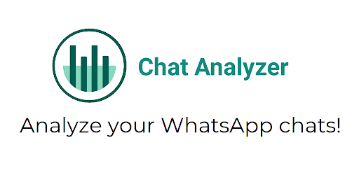

Pneumonia Detection using CRNN (Convolutional Recurrent Neural Network)
Revolutionize pneumonia diagnosis with my CRNN-based pneumonia detection project. By leveraging deep learning techniques, this cutting-edge solution analyzes medical images to accurately identify and classify pneumonia cases. Enhancing early detection and aiding in timely treatment, this project showcases the potential of artificial intelligence in transforming healthcare.

IPL Data Analytics App On Streamlit
Experience the thrill of IPL with my interactive data analytics app built on Streamlit. Dive into comprehensive player and team statistics, analyze performance trends, and uncover valuable insights.
Image Resizer and Compressor App using Python
Easily resize and compress your images with my Python-based image resizer and compressor project. This efficient tool allows you to quickly adjust the dimensions of your images while reducing their file size, optimizing them for web usage or storage.
Laptop Price Predictor
Take the guesswork out of laptop shopping with my laptop price predictor app. Utilizing machine learning algorithms, this app analyzes various laptop specifications and provides accurate price predictions.
Mobile Price Predictor
Eliminate uncertainty when buying mobile phones with my Mobile Price Predictor app. Powered by advanced machine learning algorithms, this application thoroughly analyzes diverse mobile device features to deliver precise price forecasts.

Whatsapp Chat Analyzer
Uncover valuable insights from your WhatsApp chats with my interactive chat analyzer app built on Streamlit. Upload your chat history, visualize message patterns, track activity trends, and gain a deeper understanding of your conversations.
Olympics Dashboard using Tableau
Immerse yourself in the spirit of the Olympics with my Tableau dashboard. Explore the rich history of the Games, analyze medal distributions, and uncover captivating insights into sports performance and country achievements.